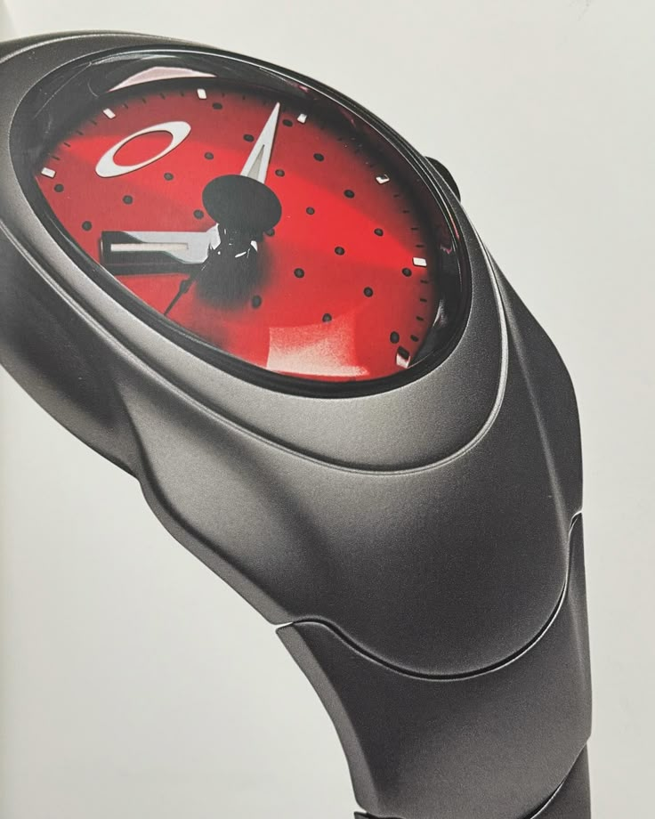

Oakley Watch Archive
TIME BOMB
A watch powered by motion.
Built to Move.
Made to Last.
Made to Last.
A futuristic Oakley icon shaped by titanium construction, radical curves, and kinetic technology. The Time Bomb brought Oakley's design language into watchmaking.

Two ways into the story.
Explore the Time Bomb through Oakley's experimental design language and its place in late-1990s watch culture.
Key facts.
The essentials behind the object: its era, material language, and what makes it distinct within Oakley's design history.
Type
Motion-powered watch
Design
Biomorphic, futuristic form
Material
Titanium construction
Status
Cult Oakley collector piece
More than a watch.
The Oakley Time Bomb stands out because it does not follow the visual rules of traditional watch design. It feels aerodynamic, engineered, and slightly alien in the best possible way.